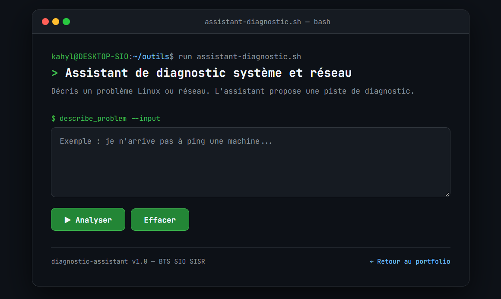
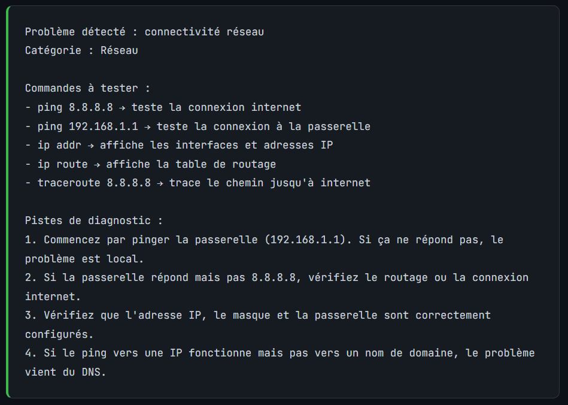

Assistant de diagnostic système et réseau
Projet web interactif permettant d’aider un utilisateur à identifier l’origine d’un problème informatique simple. L’objectif était de créer une interface qui analyse une description saisie par l’utilisateur et propose des pistes de diagnostic avec des commandes Linux et réseau adaptées.
Objectifs du projet
🧠 Analyse de problème
Création d’un assistant capable de reconnaître certains mots-clés dans une description utilisateur.
💻 Interface web
Réalisation d’une interface inspirée d’un terminal Linux pour rester cohérent avec le thème système et réseau.
⚙️ Interaction JavaScript
Utilisation de conditions pour afficher automatiquement un diagnostic selon le problème saisi.
🌐 Diagnostic réseau
Mise en avant de commandes comme ping, ip addr, ip route, nslookup, ssh ou systemctl.
Interface de l’assistant
L’utilisateur peut saisir une description de problème dans une zone de texte. L’assistant analyse ensuite la demande et affiche une proposition de diagnostic.

Exemple de diagnostic
Exemple avec un problème de connectivité réseau. L’assistant propose des commandes utiles pour vérifier la connexion, la passerelle, l’adresse IP et la résolution DNS.

Fonctionnalités réalisées
🔎 Détection par mots-clés
L’assistant reconnaît plusieurs catégories de problèmes comme le DNS, le ping, SSH, les permissions, le firewall ou DHCP.
📋 Affichage de commandes
Pour chaque problème détecté, des commandes adaptées sont affichées pour orienter le diagnostic.
🧹 Bouton effacer
Ajout d’un bouton permettant de vider la zone de texte et de masquer le résultat affiché.
🖥️ Design terminal
Mise en place d’un design sombre rappelant une fenêtre de terminal Linux afin de rendre le projet plus original.
Compétences développées
HTML / CSS
Structuration d’une page web et création d’une interface propre, lisible et adaptée au thème du projet.
JavaScript
Utilisation de fonctions, conditions, récupération de saisie utilisateur et affichage dynamique de résultats.
Commandes Linux
Révision de commandes utiles comme chmod, systemctl, journalctl, ls -l ou bash -x.
Diagnostic réseau
Compréhension des étapes de diagnostic : tester la connectivité, vérifier l’adressage IP, le routage, le DNS et les services.